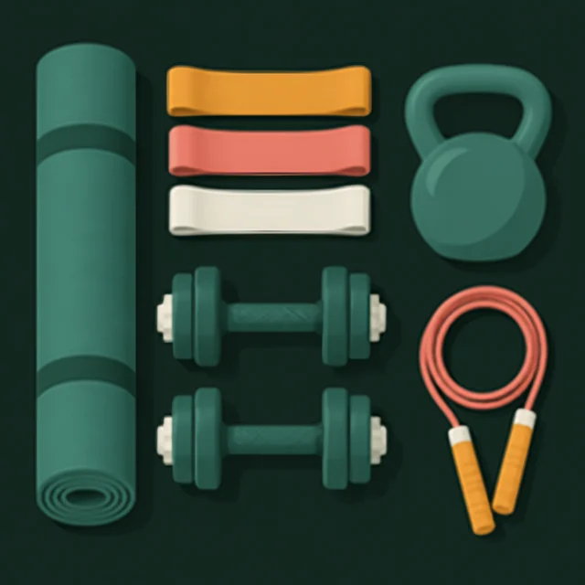

01 · главный вопрос
Без зала — это работает?
Да. Для силы и мышц важнее усилие и регулярность, чем дорогое железо.
8исследований: резинки дают такой же прирост силы, как гантели и тренажёры
21исследование: лёгкие веса почти до отказа растят мышцы как тяжёлые
0 ₽стоит первый уровень — вес собственного тела
Метаанализ 8 исследований не нашёл разницы в приросте силы между тренировками с эластичным сопротивлением и обычными1. Другой метаанализ (21 исследование, 630 человек): лёгкие и тяжёлые веса одинаково растят мышцы, если подходы выполнять с высоким усилием; для максимальной силы тяжёлые веса всё же лучше2.
Вывод: начинать можно с минимума и докупать по мере роста.